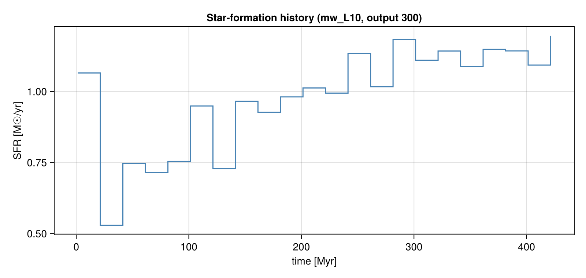

<!– GENERATED FILE. Do not edit this markdown. Source notebook: sfr.ipynb Regenerate with: MERADIR=<repo checkout> ./renderdocs.sh Any edit here is lost the next time the docs are rendered. –>
Star-Formation Rate
This page is also an executable Jupyter notebook — open / download sfr.ipynb. The notebooks run end-to-end and double as part of Mera's test suite.
Mera measures star formation directly from the star particles, in two complementary ways:
sfr— the star-formation history SFR(t): stellar mass formed per time bin, in M☉/yr.sfr_snapshot— the current SFR from a single snapshot: mass formed within recent look-back windows (the observational "current SFR", e.g. Hα ≈ 5–10 Myr, FUV ≈ 100 Myr), plus the lifetime-averaged rate.
Star particles are selected by the universal sentinel birth ≠ 0; the formation-time axis is always physical (non-cosmological runs use the proper birth time, cosmological runs convert via the Friedmann table). This notebook runs on the non-cosmological mw_L10 disk galaxy (output 300), which carries star particles.
Companion to the Star-Formation Rate doc page.
# Example-data root. Point this at your own simulation folder, or set the
# MERA_EXAMPLES environment variable; every path below is built from it.
MERA_EXAMPLES = get(ENV, "MERA_EXAMPLES", "/Volumes/FASTStorage/Simulations/Mera-Tests");
using Mera
info = getinfo(300, joinpath(MERA_EXAMPLES, "RAMSES/mw_L10"))
parts = getparticles(info)
gas = gethydro(info)
println("particles loaded : ", length(parts.data))
println("hydro cells : ", length(gas.data))*__ __ _______ ______ _______
| |_| | | _ | | _ |
| | ___| | || | |_| |
| | |___| |_||_| |
| | ___| __ | |
| ||_|| | |___| | | | _ |
|_| |_|_______|___| |_|__| |__|
Mera v1.8.0
[Mera]: 2026-08-03T12:19:09.624
Code: RAMSES
output [300] summary:
mtime: 2023-04-09T05:34:09
ctime: 2025-06-21T18:31:24.020
=======================================================
simulation time: 445.89 [Myr]
boxlen: 48.0 [kpc]
ncpu: 640
ndim: 3
cosmological: false
-------------------------------------------------------
amr: true
level(s): 6 - 10 --> cellsize(s): 750.0 [pc] - 46.88 [pc]
-------------------------------------------------------
hydro: true
hydro-variables: 7 --> (:rho, :vx, :vy, :vz, :p, :scalar_00, :scalar_01)
hydro-descriptor: (:density, :velocity_x, :velocity_y, :velocity_z, :pressure, :scalar_00, :scalar_01)
γ: 1.6667
-------------------------------------------------------
gravity: true
gravity-variables: (:epot, :ax, :ay, :az)
-------------------------------------------------------
particles: true
- Nstars: 5.445150e+05
particle-variables: 7 --> (:vx, :vy, :vz, :mass, :family, :tag, :birth)
particle-descriptor: (:position_x, :position_y, :position_z, :velocity_x, :velocity_y, :velocity_z, :mass, :identity, :levelp, :family, :tag, :birth_time)
-------------------------------------------------------
rt: false
clumps: false
-------------------------------------------------------
namelist-file: ("&COOLING_PARAMS", "&SF_PARAMS", "&AMR_PARAMS", "&BOUNDARY_PARAMS", "&OUTPUT_PARAMS", "&POISSON_PARAMS", "&RUN_PARAMS", "&FEEDBACK_PARAMS", "&HYDRO_PARAMS", "&INIT_PARAMS", "&REFINE_PARAMS")
-------------------------------------------------------
timer-file: true
compilation-file: false
makefile: true
patchfile: true
=======================================================
[Mera]: Get particle data: 2026-08-03T12:19:15.216
Using threaded processing with 4 threads
Key vars=(:level, :x, :y, :z, :id, :family, :tag)
Using var(s)=(1, 2, 3, 4, 7) = (:vx, :vy, :vz, :mass, :birth)
domain:
xmin::xmax: 0.0 :: 1.0 ==> 0.0 [kpc] :: 48.0 [kpc]
ymin::ymax: 0.0 :: 1.0 ==> 0.0 [kpc] :: 48.0 [kpc]
zmin::zmax: 0.0 :: 1.0 ==> 0.0 [kpc] :: 48.0 [kpc]
Processing 640 CPU files using 4 threads
Mode: Threaded processing
Combining results from 4 thread(s)...
Found 5.445150e+05 particles
Memory used for data table :38.428720474243164 MB
-------------------------------------------------------
[Mera]: Get hydro data: 2026-08-03T12:19:19.051
Key vars=(:level, :cx, :cy, :cz)
Using var(s)=(1, 2, 3, 4, 5, 6, 7) = (:rho, :vx, :vy, :vz, :p, :scalar_00, :scalar_01)
domain:
xmin::xmax: 0.0 :: 1.0 ==> 0.0 [kpc] :: 48.0 [kpc]
ymin::ymax: 0.0 :: 1.0 ==> 0.0 [kpc] :: 48.0 [kpc]
zmin::zmax: 0.0 :: 1.0 ==> 0.0 [kpc] :: 48.0 [kpc]
📊 Processing Configuration:
Total CPU files available: 640
Files to be processed: 640
Compute threads: 4
GC threads: 4
Processing files: 100%|██████████████████████████████████████████████████| Time: 0:00:18 (28.91 ms/it)
✓ File processing complete! Combining results...
✓ Data combination complete!
Final data size: 28320979 cells, 7 variables
Creating Table from 28320979 cells with max 4 threads...
Threading: 4 threads for 11 columns
Max threads requested: 4
Available threads: 4
Using parallel processing with 4 threads
Creating IndexedTable with 11 columns...
✓ Table created in 40.708 seconds
Memory used for data table :2.321086215786636 GB
-------------------------------------------------------
particles loaded : 544515
hydro cells : 28320979Star-formation history
sfr(parts; tbinsize=...) returns left bin edges t [Myr] and the SFR s [M☉/yr]. The integral of the history recovers the total stellar mass formed: sum(s) * tbinsize * 1e6 ≈ Σ stellar mass.
By default mass=:auto prefers a stored initial-mass column (SFR should use the birth mass, not the current mass reduced by post-formation mass loss).
t, s = sfr(parts; tbinsize=20.0) # t = left bin edges [Myr], s = SFR [M☉/yr]
println("number of time bins : ", length(t))
println("time range [Myr] : ", (first(t), last(t)))
println("peak SFR [M☉/yr] : ", maximum(s))
println("mean SFR [M☉/yr] : ", sum(s)/length(s))
@show sum(s) * 20.0 * 1e6 # ≈ total stellar mass formed [M☉]number of time bins : 22
time range [Myr] : (1.419158337486011, 421.419158337486)
peak SFR [M☉/yr] : 1.19558
mean SFR [M☉/yr] : 0.9825318181818182
sum(s) * 20.0 * 1.0e6 = 4.32314e84.32314e8SN mass-loss correction
When a run stores only the current mass, pass eta_sn to reconstruct the birth mass: a star older than t_sn_delay Myr (default 5) has shed a fraction eta_sn, so it is rescaled by 1/(1-eta_sn). It is ignored (with a warning) when an initial-mass field is already in use.
t2, s2 = sfr(parts; tbinsize=20.0, eta_sn=0.2) # 20% SN mass loss → birth-mass-based SFR
println("peak SFR (eta_sn=0.2) [M☉/yr] : ", maximum(s2))peak SFR (eta_sn=0.2) [M☉/yr] : 1.485425Current SFR from one snapshot
sfr_snapshot returns the current SFR over look-back windows (default [5, 10, 100] Myr) plus the lifetime-averaged rate. For each window Δt, SFR(Δt) = M⋆(age ≤ Δt) / Δt.
snap = sfr_snapshot(parts) # default windows [5, 10, 100] Myr
println("windows [Myr] : ", snap.windows)
println("SFR per window [M☉/yr]: ", snap.sfr)
println("lifetime mean [M☉/yr]: ", snap.sfr_mean)
println("n_stars : ", snap.n_stars)
println("stellar mass [M☉] : ", snap.stellar_mass_Msol)
println("mass field used : ", snap.mass_field)windows [Myr] : [5.0, 10.0, 100.0]
SFR per window [M☉/yr]: [1.3736, 1.377, 1.14778]
lifetime mean [M☉/yr]: 0.986498525911278
n_stars : 544515
stellar mass [M☉] : 4.38466e8
mass field used : mass# custom look-back windows
snap2 = sfr_snapshot(parts; windows=[5.0, 10.0, 50.0, 100.0])
println("custom windows [Myr] : ", snap2.windows)
println("SFR per window [M☉/yr]: ", snap2.sfr)custom windows [Myr] : [5.0, 10.0, 50.0, 100.0]
SFR per window [M☉/yr]: [1.3736, 1.377, 1.164728, 1.14778]Depletion time & star-formation efficiency
depletion_time(gas, SFR) combines a gas region with an SFR estimate to return the gas depletion time t_depl = M_gas/SFR, the mass-weighted free-fall time ⟨t_ff⟩, and the efficiency per free-fall time ε_ff = SFR·⟨t_ff⟩/M_gas (Krumholz–McKee). Mask to the star-forming gas to measure its efficiency.
sfr_now = snap.sfr[2] # current SFR from the 10 Myr window [M☉/yr]
d = depletion_time(gas, sfr_now; mask = getvar(gas, :rho, :nH) .> 27) # dense star-forming gas
println("SFR used [M☉/yr] : ", d.sfr)
println("M_gas (dense) [M☉] : ", d.M_gas_Msol)
println("depletion time [Gyr] : ", d.t_depl_Gyr)
println("⟨t_ff⟩ (mass-w) [Myr] : ", d.t_ff_mw_Myr)
println("epsilon_ff (KM) : ", d.eps_ff)SFR used [M☉/yr] : 1.377
M_gas (dense) [M☉] : 3.5681431847261477e8
depletion time [Gyr] : 0.2591244142865757
⟨t_ff⟩ (mass-w) [Myr] : 7.170885863082442
epsilon_ff (KM) : 0.02767352463806009The per-cell free-fall time is itself a getvar field :freefall_time (= √(3π/32Gρ)), correct in any time unit.
tff = getvar(gas, :freefall_time, :Myr)
println("per-cell t_ff [Myr] range : ", extrema(tff))per-cell t_ff [Myr] range : (4.434042095351683, 158141.82257929075)Plot: the star-formation history
A CairoMakie step plot of SFR(t), the standard SFH figure.
using CairoMakie
fig = Figure(size=(800, 380))
ax = Axis(fig[1,1]; xlabel="time [Myr]", ylabel="SFR [M☉/yr]",
title="Star-formation history (mw_L10, output 300)")
stairs!(ax, t, s; step=:post, color=:steelblue)
fig